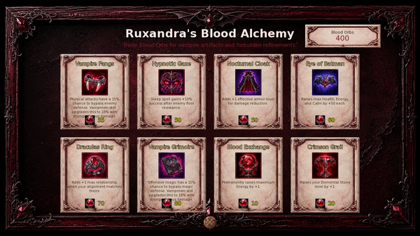

Player wiki noticeThis community-maintained page may contain gameplay, story, and mature-content spoilers.
Ruxandra的炼金店——血液炼金指南
搅拌器音符 : 本页面解释商店访问,货币,购买,及其效果,不透露Ruxandra个人场景或主要故事的结果.
概览
Ruxandra的血液炼金术 是一个商店在 吸血鬼实验室在吸血鬼巢穴里它交换 血块 现金、晶体和龙币无法支付这些采购的费用。
| 细节 | 所需经费或费用 |
|---|---|
| 店员 | 治安官Ruxandra |
| 地点 | 吸血鬼巢穴——吸血鬼实验室 |
| 行动 | 血液炼金术 |
| 解锁 | 25岁以上吸血鬼 |
| 货币 | 库存中携带的血球 |
| 开店 | 0分钟;无现金费用 |
| 独特的文物 | 6个; 365 血块 整个集 |
| 不断改进 | 血液交换和青铜杯 |
有效的吸血鬼 店铺不需要特定的Ruxandra关系阶段、薄膜完成或 吸血鬼主义 吸血鬼在单独获得后会强化某些文物。
寻找商店
到达吸血鬼巢穴,进入 吸血鬼实验室选择 血液炼金术 Ruxandra整天在实验室里。
有两条通往巢穴的路线:
- 敦煌入口: 到达 地下23层 输入其 卡塞尔 砖瓦。这个入口独立于 Story Beat 61. 巢穴。 返回敦煌 传送门带你回地牢
- 图书馆入口: 完成后 Story 击球61旅费 城市图书馆 图书馆地下室 黑暗走廊 吸血鬼巢穴 吸血鬼实验室图书馆快捷键需要解锁故事
见 敦革和龙币 地牢进化和 Ruxandra的走过 她的介绍和个人相遇。
血块
血球有两个用途,所以保持你的店面预算 与你消耗的血球分开:
- 在库存中使用 : 消耗 Ob, 添加 +1 碱基吸血鬼 999人以下,恢复 健康、能源、平静和满足 以他们现在的最大。
- 在这家店里玩牌: 消耗上市价格并交付文物或改进品。
获取更多血球
打败符合资格的吸血鬼和血敌 敦煌楼 21-25 给出 15%的基本机会 ; 保证投放敌人的条目绕过卷。 适用的投放奖金可以增加机会。此卷与普通的皮卡轴投放是分开的。 吸血鬼主题的地牢相遇也可以授予或交易血球。一个 goblin 相遇提议 五个龙币一个血球或者你可以试着偷如果你有 手戏 在每次访问中都无法保证碰面和战斗下降。
使用商店

- 到达 有效的吸血鬼 25 并带来足够的未消耗的血球。
- 打开 血液炼金术 在吸血鬼实验室
- 读取每张卡片的项目名称,效果,和血球价格.
- 单击 文物图片 或 下方的血球图标 。立即单击购买;没有确认屏幕。
- 请检查右上角更新的圆形平衡。 页:1 在底层。
独有物品变成灰色并显示 拥有 在购买后,您无法购买的卡片也带有灰色外购图标。血液交换和Crimson Prail 仍然可以重复使用,只要您符合要求并能支付。
一次性人造物
每个文物都是永久的 关键项目它的效果在您拥有时适用;它不是一个消耗性设备,也不占用设备槽。
| 艺术 | 血块 | 效果 |
|---|---|---|
| 吸血鬼方块 | 55 | 物理攻击、快速攻击、风暴和强力打击 15%的机会 绕过敌人的防御 并增加基于吸血鬼的奖金损害 吸血鬼主义 增加机会 18% 并强化奖金 破坏卷。 |
| 催眠盖兹 | 50 | 给 +10个百分点 在地板发生阻力后睡眠成功, 70%至75% 在老板的战斗中,它提高了基础机会 13%至20%。睡眠必须已经可用;此项不教咒语。 |
| 夜衣画 | 50 | 添加数 +1 有效装甲水平 它不升级装备装甲物品本身。 |
| 蝙蝠侠的眼睛 | 60 | 添加数 +50 最大健康,+50 最大能源,+50 最大平静。它没有增加最大限度的满足。 |
| 德古拉环 | 70 | 添加数 +1到最大关系点滚动 当您的活动对齐轴与 NPC 匹配时。它不会增加最小的卷数,不会删除对齐的处罚,也不会在您不结盟时适用。 |
| 吸血鬼纪事 | 80 | 进攻魔法有 15%的机会 以绕过敌人的破坏减少、魔法抵抗、吸收和强元素抵抗,同时保留弱点奖金。它也增加了基于吸血鬼的奖金损害。 吸血鬼主义 增加机会 18% 并增强奖金。 |
全套费用 365 血块. 已经拥有的文物不能再购买. 德古拉环 是游戏所显示的名称,不附带任何缩写。
吸血鬼伤害和睡眠细节
当方块或文字触发时,其增加的损坏通常从 1到您有效的吸血鬼价值与 吸血鬼主义它从 10至1.5倍于该值,四舍五入。这些效果都是偶然的;无论文物保证每一次攻击都不会绕过防御或击中敌人。
Hypnotic Gaze的奖金并不能保证Sleep,其他物品,技能,敌人的抵抗,以及敌人在之前Sleep之后的临时抵抗,仍然可以改变最后的机会,有些遭遇完全阻止Sleep.
可重复改进
| 完善 | 每次购买的血球 | 所需额外经费 | 效果 |
|---|---|---|---|
| 交换血液 | 10 | 有效吸血鬼 25 | 永久补充 +1 最大能量 这是能量能力升级,不是能量再充电或吸血鬼增加。 |
| 青铜杯 | 20 | 有效吸血鬼25岁,拥有 元素石头 | 添加数 +1 元素石层 石头留在你的库存中 |
这两项采购都是可重复的,没有规定商店每日限额或水平上限。 青色圣杯藏起来直到你拥有一块元素石购买它可以提升你已经拥有的石头;它不会给你新的石头。
见 灵魂石 以获得元素石并了解其水平效应。
选择购买
- 身体攻击: Vampire Fangs支持你的身体犯罪;夜衣可以改善人身保护.
- 进攻魔法: 吸血鬼Grimouse 支持损坏咒语。 催眠Gaze 有用,如果您已经使用 Sleep 。
- 资源能力: 蝙蝠侠的眼睛给了三个永久的 +50 血液交换费用 10个 +1 能量,所以在大量用于可重复的能源升级之前先考虑这些文物.
- 关系: 德古拉环对与你的主动对齐的NPC有好处;为此选择它而不是期待战斗效果.
- 元素石生长: Crimson Prail在考虑你想要的独特文物后,将多余的Orbs转化为石质水平.
解决问题
| 问题 | 检查什么 |
|---|---|
| 血液炼金术不见了 | 你必须在 吸血鬼实验室 与 25岁或以上。关系点和热量完成不能取代统计要求。 |
| 无法点击商店卡 | 足够了 血块 。已经拥有的独有文物不能回购。 |
| 红宝石杯不见了 | 拥有一个 元素石头 以及满足吸血鬼的要求 |
| 购物前血球不见了 | 使用库存的矿石消耗该矿石;商店购买也立即扣除其上市价格。 |
| 一个艺术品没有教技能 | 这家店售卖关键物品和精品,催眠伽兹不教睡眠,方斯/Grimonic不教梵语. |
| 传说的场景没有触发 | 个人接触使用不同的要求。 遵循 Ruxandra 的走行部,这不是购物的先决条件 。 |
相关页面
此指南恢复并扩展了 Sh1n7 早先的商店信息 Ruxandra 指南,根据 CC BY-SA 4.0 (英语).。价格、解锁和效果与当前游戏对照 2026年10月4日 (中文(简体) )..
Ruxandra's Alchemy Shop — Blood Alchemy Guide
Spoiler note: This page explains shop access, currency, purchases, and their effects. It does not reveal the outcomes of Ruxandra's personal scenes or the main story.
Overview
Ruxandra's Blood Alchemy is a shop in the Vampire Laboratory, inside the Vampire Lair. It exchanges Blood Orbs for six permanent key items and two repeatable refinements. Cash, crystals, and Dragon Coins cannot pay for these purchases.
| Detail | Requirement or cost |
|---|---|
| Shopkeeper | Magistra Ruxandra |
| Location | Vampire Lair → Vampire Laboratory |
| Action | Blood Alchemy |
| Unlock | Effective Vampire 25 or higher |
| Currency | Blood Orbs carried in your inventory |
| Opening the shop | 0 minutes; no cash cost |
| Unique artifacts | Six; 365 Blood Orbs for the complete set |
| Repeatable refinements | Blood Exchange and Crimson Grail |
Effective Vampire includes applicable modifiers. The shop does not require a particular Ruxandra relationship stage, a lore-scene completion, or the Vampirism skill. Vampirism strengthens certain artifacts after you obtain it separately.
Finding the Shop
Reach the Vampire Lair, enter the Vampire Laboratory, and select Blood Alchemy from the location actions. Ruxandra is present in the laboratory all day.
There are two routes to the lair:
- Dungeon entrance: Reach Dungeon Floor 23 and enter its Castle tile. This entrance works independently of Story Beat 61. The lair's Return to Dungeon portal takes you back to the dungeon.
- Library entrance: After completing Story Beat 61, travel City Library → Library Basement → Dark Corridor → Vampire Lair → Vampire Laboratory. The library shortcut requires that story unlock.
See Dungeon & Dragon Coins for dungeon progression and Ruxandra's walkthrough for her introduction and personal encounters.
Blood Orbs
Blood Orbs serve two purposes, so keep your shop budget separate from the orbs you consume:
- Use one in inventory: consumes the orb, adds +1 base Vampire up to 999, and restores Health, Energy, Calm, and Satiation to their current maxima.
- Spend orbs in this shop: consumes the listed price and delivers the artifact or refinement. Consumed inventory orbs are no longer available to spend.
Getting more Blood Orbs
Defeating eligible vampire and blood enemies on Dungeon Floors 21–25 gives a 15% base chance of a Blood Orb drop; guaranteed-drop enemy entries bypass the roll. Applicable drop bonuses can improve the chance. This roll is separate from the normal pickaxe drop. Vampire-themed dungeon encounters can also award or trade Blood Orbs. One goblin encounter offers one Blood Orb for 5 Dragon Coins, or you can try to steal it if you have the Sleight of Hand skill (rogue check, 1-100 roll). Encounters and combat drops are not guaranteed on every visit.
Using the Shop
- Reach effective Vampire 25 and bring enough unconsumed Blood Orbs.
- Open Blood Alchemy in the Vampire Laboratory.
- Read each card's item name, effect, and Blood Orb price.
- Click the artifact picture or the Blood Orb icon beneath it to buy. A click purchases immediately; there is no confirmation screen.
- Check the updated orb balance in the upper-right corner. Close the shop with the X at the bottom.
Unique items become greyed out and display OWNED after purchase. Cards you cannot afford also have greyed-out purchase icons. Blood Exchange and Crimson Grail remain repeatable as long as you meet their requirements and can pay.
One-Time Artifacts
Each artifact is a permanent key item. Its effect applies while you own it; it is not a consumable and does not occupy an equipment slot.
| Artifact | Blood Orbs | Effect |
|---|---|---|
| Vampire Fangs | 55 | Physical Attack, Quick Attack, Stormslash, and Power Strike have a 15% chance to bypass enemy defense and add Vampire-based bonus damage. Vampirism raises the chance to 18% and strengthens the bonus damage roll. |
| Hypnotic Gaze | 50 | Gives +10 percentage points to normal Sleep success after floor resistance and raises its ordinary cap from 70% to 75% before other modifiers. In boss fights, it raises the base chance from 13% to 20%. Sleep must already be available; this item does not teach the spell. |
| Nocturnal Cloak | 50 | Adds +1 effective armor level when calculating damage reduction. It does not upgrade the equipped armor item itself. |
| Eye of Batman | 60 | Adds +50 maximum Health, +50 maximum Energy, and +50 maximum Calm. It does not add maximum Satiation. |
| Draculas Ring | 70 | Adds +1 to the maximum relationship-point roll when your active alignment axis matches the NPC's. It does not increase the minimum roll, remove opposite-alignment penalties, or apply while you are Unaligned. |
| Vampire Grimoire | 80 | Offensive magic has a 15% chance to bypass enemy damage reduction, magic resistance, absorption, and strong-element resistance while retaining weakness bonuses. It also adds Vampire-based bonus damage. Vampirism raises the chance to 18% and strengthens that bonus. |
The full set costs 365 Blood Orbs. Already-owned artifacts cannot be bought again. Draculas Ring is the name displayed by the game, without an apostrophe.
Vampire damage and Sleep details
When Fangs or Grimoire triggers, its added damage normally rolls from 1 to your effective Vampire value. With Vampirism, it rolls from 10 to 1.5 times that value, rounded down. These effects are chance-based; neither artifact guarantees every attack will bypass defenses or hit the enemy.
Hypnotic Gaze's bonus does not guarantee Sleep. Other items, skills, enemy resistance, and the enemy's temporary resistance after a previous Sleep can still change the final chance. Some encounters prevent Sleep entirely.
Repeatable Refinements
| Refinement | Blood Orbs per purchase | Additional requirement | Effect |
|---|---|---|---|
| Blood Exchange | 10 | Effective Vampire 25 | Permanently adds +1 maximum Energy per purchase. This is an Energy-capacity upgrade, not an Energy refill or a Vampire increase. |
| Crimson Grail | 20 | Effective Vampire 25 and own Elemental Stone | Adds +1 Elemental Stone level per purchase. The stone remains in your inventory. |
Both purchases are repeatable, with no shop-imposed daily limit or level cap. Crimson Grail is hidden until you own an Elemental Stone. Buying it upgrades the stone you already have; it does not give you a new stone.
See Soul Stones for obtaining the Elemental Stone and understanding its level effects.
Choosing Purchases
- Physical attacks: Vampire Fangs supports your physical offense; Nocturnal Cloak improves physical protection.
- Offensive magic: Vampire Grimoire supports damage spells. Hypnotic Gaze is useful if you already use Sleep.
- Resource capacity: Eye of Batman gives three permanent +50 increases for 60 Orbs. Blood Exchange costs 10 Orbs for each +1 Energy, so consider the artifact before spending heavily on repeatable Energy upgrades.
- Relationships: Draculas Ring benefits gains with NPCs matching your active alignment; choose it for that purpose rather than expecting a combat effect.
- Elemental Stone growth: Crimson Grail converts surplus Orbs into stone levels after you have considered the unique artifacts you want.
Troubleshooting
| Problem | What to check |
|---|---|
| Blood Alchemy action is missing | You must be in the Vampire Laboratory with effective Vampire 25 or higher. Relationship points and lore completion do not replace that stat requirement. |
| Shop cards cannot be clicked | Carry enough Blood Orbs for the displayed price. Already-owned unique artifacts cannot be repurchased. |
| Crimson Grail is missing | Own an Elemental Stone as well as meeting the Vampire requirement. |
| Blood Orbs disappeared before shopping | Using an orb from inventory consumes it; shop purchases also deduct their listed prices immediately. |
| An artifact did not teach a skill | This shop sells key items and refinements. Hypnotic Gaze does not teach Sleep, and Fangs/Grimoire do not teach Vampirism. |
| A lore scene has not triggered | Personal encounters use separate requirements. Follow Ruxandra's walkthrough; they are not prerequisites for shopping. |
Related Pages
This guide restores and expands shop information from Sh1n7's earlier Ruxandra guide, licensed under CC BY-SA 4.0. Prices, unlocks, and effects were checked against the current game on 4 October 2026.
Text adapted from the community-maintained Chronoromancer Wiki under CC BY-SA 4.0.